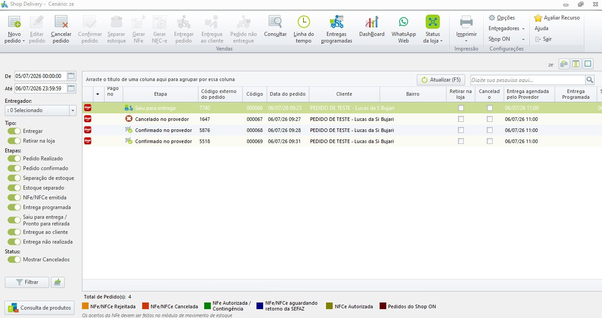
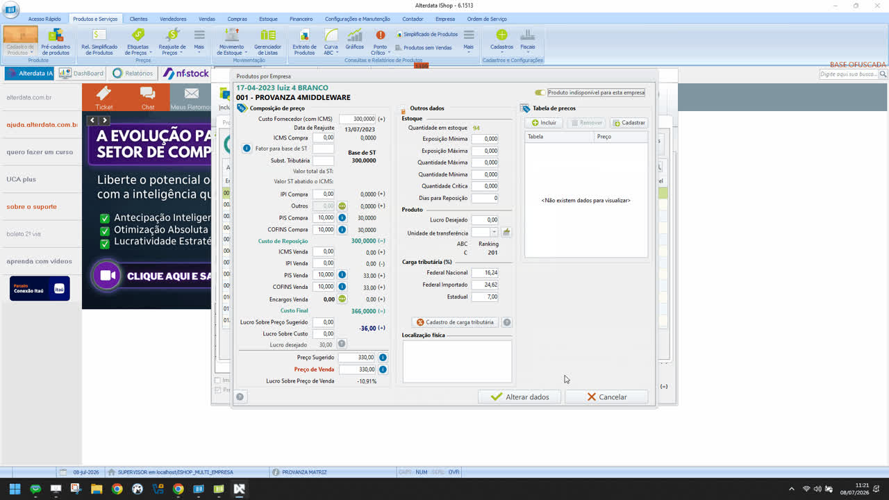
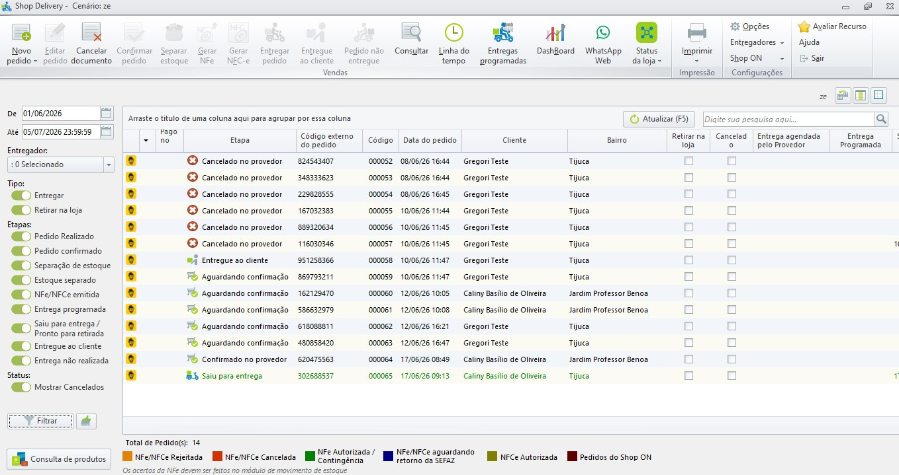
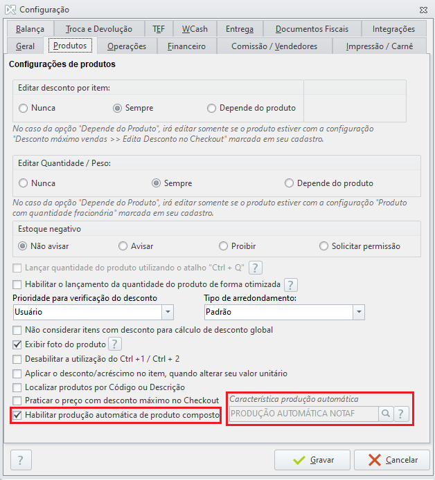
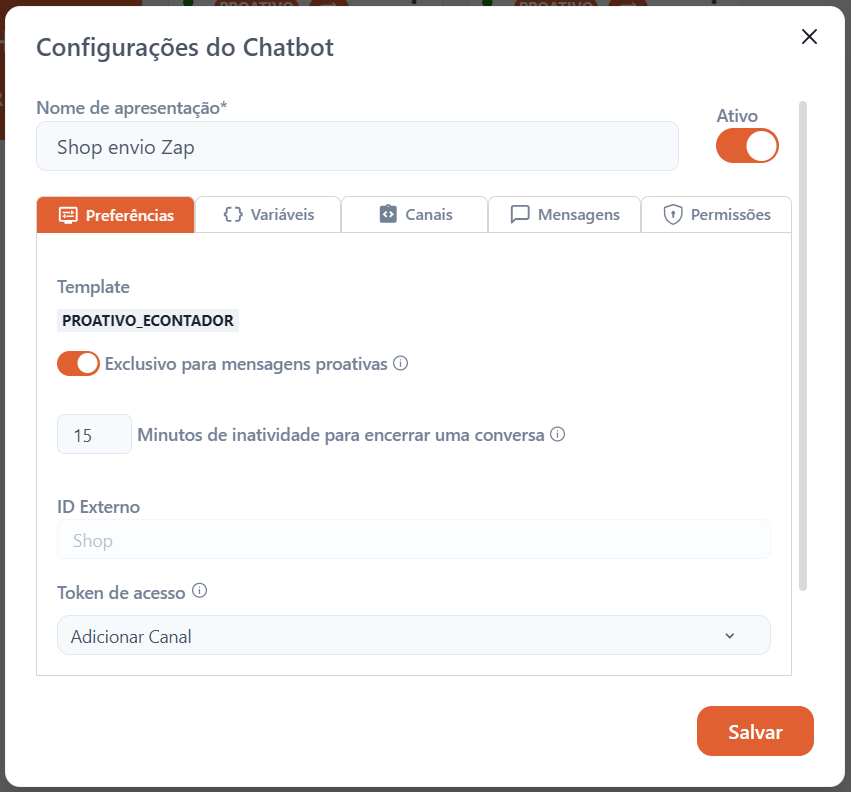
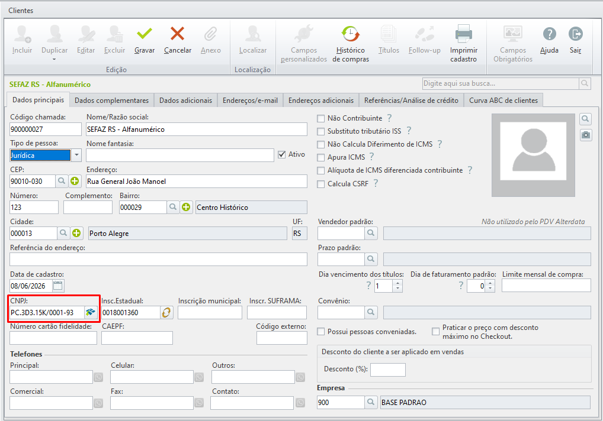
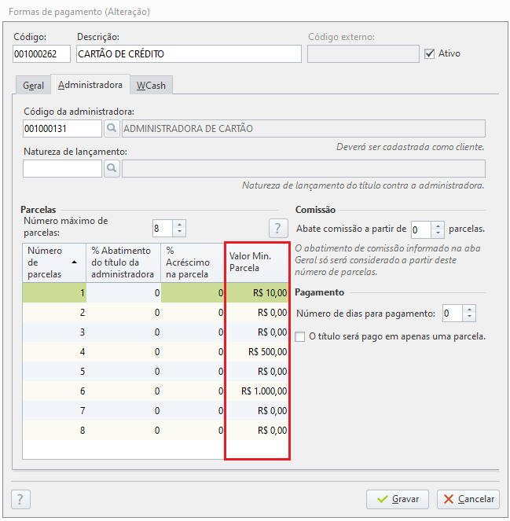
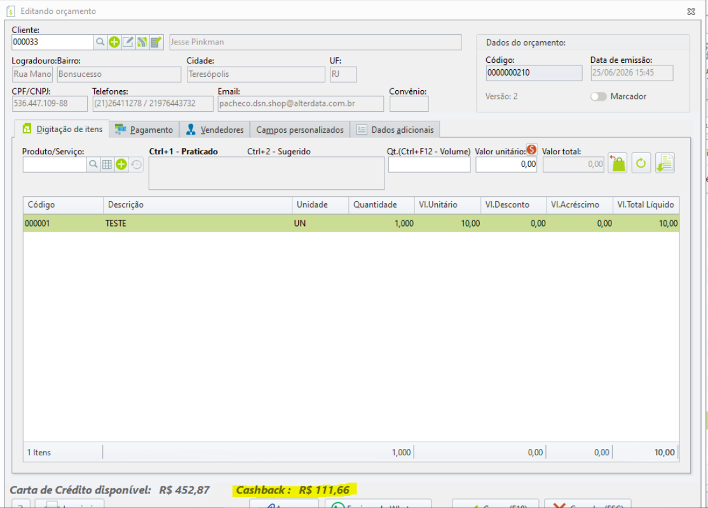
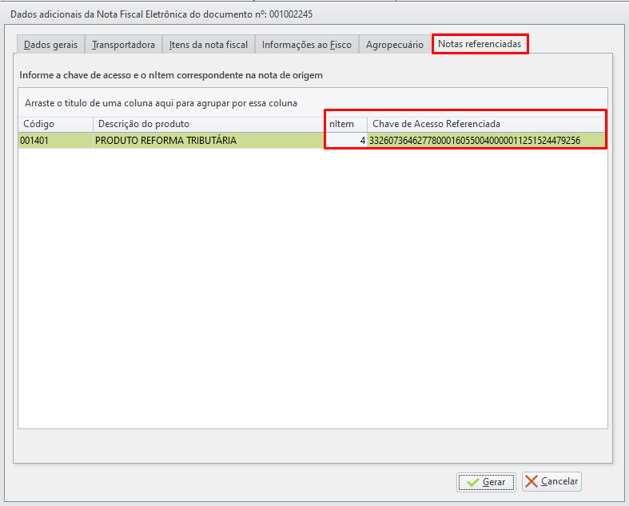

Os destaques oficiais desta atualização, reunidos aqui mesmo —
sem precisar rolar a página até a seção de novidades.
Formas de controlar melhor a operação
Veja aqui mesmo, sem precisar rolar até o fim da página, as principais
formas de acompanhar e controlar a operação da sua loja com o wShop.
Novidades da versão 6.1514
Os destaques oficiais desta atualização, conforme a apresentação de review
da versão e a página de novidades da central de ajuda Alterdata.
Fonte:
6.1514 na central de ajuda
· os números de processo indicam o item correspondente na página oficial.
Interface
Nova tela de vendas do Nota Fácil
A interface de emissão foi completamente redesenhada: abas de
Venda e Dados Adicionais, com telas
dedicadas para cliente, vendedor e recebimentos. Menos poluição visual,
um processo de venda mais limpo e ágil — com atalhos de teclado para
operar o PDV sem tirar as mãos do teclado.
Os pedidos do iFood Mercado chegam automaticamente ao
módulo Delivery, eliminando a digitação manual:
Precisão por EAN: o produto é identificado pelo código de barras, evitando furos de estoque;
Sincronia com o Separador: o pedido só entra na tela de vendas após ser finalizado no app de separação do iFood;
Ativação em Vendas ➔ Delivery ➔ Opções ➔ Integração (foco em varejo/mercearia, sem adicionais).

Pedidos do iFood Mercado no Delivery Shop
Processo WSHOP-135810
Integração
Gestão inteligente com a Napp via API
Vendas, produtos e estoque agora sincronizam com a Napp por integração
direta via API — um conector instalado como serviço do Windows, com
validação automática que corrige inconsistências antes
do envio.
Valores e descontos validados em cada venda;
Catálogo protegido contra duplicidades;
Status traduzidos automaticamente para o padrão Napp.
Agora você define a data exata da apuração do estoque
direto na tela de inventário. Basta habilitar
“Habilitar inventário com data retroativa” em Opções / Geral do
módulo e usar o seletor de data no topo da grade: o cálculo reflete o dia
escolhido sem impactar os lançamentos do dia atual.
Processo WSHOP-135320
Estoque
Conferência cega independente
O módulo de Conferência Cega agora abre de forma independente,
sem a necessidade de manter o Shop aberto ou vinculado. Menos consumo de
memória e a liberdade de conferir múltiplas lojas enquanto outros módulos
estão em uso.
Processo WSHOP-135274
Rede de Lojas
Controle de venda por loja
Restrinja a venda de produtos específicos para lojas da rede de forma
automatizada: ao marcar um item como indisponível no iShop,
ele é inativado na empresa de destino no wShop.
Ative em Configurações / Rede de Lojas ➔ Trabalhar com produtos diferenciados por Empresa;
Ou inative no iShop para aplicar a regra em todas as unidades de uma vez.

Opção “Produto indisponível para esta empresa”
Processo WSHOP-136103
Delivery
Operação no Zé Delivery centralizada
Os pedidos do Zé Delivery passam a aparecer automaticamente
no módulo Delivery do Shop, com controle preciso de status e valores e
novos ícones que identificam a origem de cada pedido.
Flexibilidade: edição manual dos pedidos;
Gestão de descontos: interpreta descontos da plataforma ou do estabelecimento;
Atenção: a sincronia de estoque com o Zé Delivery ainda é manual.

Pedidos do Zé Delivery no Delivery Shop
Processo WSHOP-135797
Nota Fácil
Produção automática de itens compostos
Vendeu um produto composto? O Nota Fácil cuida da produção e da
baixa dos insumos de forma totalmente automatizada, no
encerramento do caixa ou na abertura do módulo no dia seguinte — sem
intervenção manual.
Atenção: uma vez inserido no processo de produção automática, o produto não pode ser desfeito — confira as composições.

Configurações de produtos: habilitar produção automática
A integração com o Karoo Bot envia o orçamento em PDF,
com mensagem personalizada, direto da tela do módulo Orçamento — sem
precisar abrir o WhatsApp Web. O cliente recebe uma proposta elegante e
estruturada em poucos cliques.
Como ativar: contate o setor comercial para liberar o recurso e escolha a opção de envio via Karoo Bot.

Envio do orçamento por WhatsApp com anexo
Processo WSHOP-109270
Fiscal
Total conformidade com o CNPJ alfanumérico
Sua solução já está preparada para a Instrução Normativa RFB
nº 2.229/2024: as telas de cadastro e os esquemas de validação
aceitam o novo CNPJ que mescla letras e números, garantindo continuidade
das operações fiscais e conformidade com a Receita Federal.

Cadastro de clientes aceitando CNPJ alfanumérico
Processo WSHOP 119237
Segurança
Perfis de usuários no Shop
Cadastre colaboradores com modelos de permissões prontos:
crie perfis de acesso e, ao cadastrar um novo usuário, selecione o perfil
para aplicar todas as liberações instantaneamente. Menos cliques,
padronização de acessos e menor risco de liberação indevida.
Onde encontrar: Configurações e Manutenção > Usuários > Perfis.
Nova regra de valor mínimo por parcela direto no PDV e no
checkout: defina os limites nas configurações de pagamento e o sistema
ajusta o parcelamento de forma automática, protegendo sua margem em vendas
fracionadas.

Cadastro da forma de pagamento, aba Administradora
Processo WSHOP-138330
Orçamento
Cashback do cliente no orçamento
O saldo de cashback do cliente agora aparece
automaticamente na tela de criação de orçamentos: selecione o cliente e
ofereça o desconto na hora de fechar a proposta — um argumento a mais para
acelerar a conversão.

Valores de cashback no orçamento
Processo WSHOP-137299
Reforma Tributária
Nota de débito por perda em estoque
Nova finalidade de NF-e (6 – NF-e Débito) para baixas de
estoque no contexto da Reforma Tributária: no Movimento de Estoque,
selecione a nota de débito por perda e vincule a NF-e de origem. O sistema
calcula IBS/CBS de forma automática e proporcional e
realiza o estorno de créditos em casos de perda, perecimento, deterioração,
roubo, furto ou extravio — sem cálculo manual.
NF-e de devolução: documento referenciado por item
Em notas de devolução, o referenciamento do documento fiscal passa a ser
feito exclusivamente no grupo DFeReferenciado, informando
a chave de acesso e o número do item (nItem) de cada produto devolvido.

Aba Notas referenciadas com chave de acesso por item
Fonte: Review 6.1514
Todos os ajustes e correções
A versão 6.1514 traz 225 processos no total, conforme a apresentação oficial,
e a central de ajuda detalha 200 deles. Filtre por tipo ou procure por
palavras-chave, número do processo ou sistema afetado.
Programe processos para execução automática em horários definidos,
sem depender da operação manual diária. Os agendamentos podem ser
diários, semanais ou mensais, e o sistema mantém um
registro das ocorrências para verificar se as rotinas foram executadas.
Reajuste de preços por lote;
Baixa automática de títulos;
Atualização de estoque e da Curva ABC de produtos e clientes.
Confira produtos de vendas ou orçamentos com leitor de código de
barras, inclusive no modo conferência cega: o
expedidor separa a mercadoria sem visualizar previamente toda a lista
de itens — ideal para operações com alto volume de separação.
Controla quantidades e identifica produtos incorretos (itens a mais ou a menos);
Registra divergências e permite retomar conferências pendentes;
Trabalha com entrega futura e exibe a foto do produto em caso de divergência.
A Cotação não apenas registra preços de fornecedores: ela compara
condições comerciais e transforma o resultado em
pedidos de compra — conectando cotação, compras e
financeiro dentro do próprio wShop.
Seleção de produtos por grupo, família, fornecedor ou sugestão de compra;
Preço-alvo, prazo de pagamento e prazo de entrega comparados item a item;
Envio da cotação por Excel ou e-mail e importação da resposta do fornecedor;
Geração de pedidos de compra e títulos no financeiro conforme a condição de pagamento.
Crie fórmulas para reajustar preços com base em variáveis do próprio
produto — custo, custo de reposição, preço sugerido, lucro, ICMS, IPI,
PIS, COFINS e substituição tributária — em vez de alterar item por item.
Aplicação por filtros e a grupos de produtos;
Data e hora definidas para o lote, com volta automática ao preço anterior;
Lotes gerados para execução posterior e integração ao AlterAgente.
Essas funções representam o diferencial do wShop como retaguarda de uma operação comercial — indo além do cadastro, das vendas e dos relatórios básicos.
Central de manuais
Acesse os manuais on-line de cada função direto na central de ajuda
da Alterdata. Os links abrem em uma nova aba.